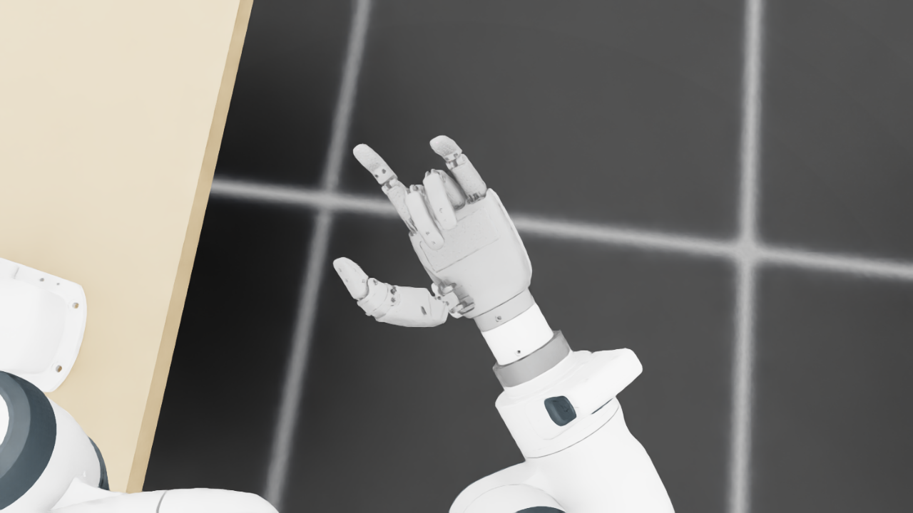
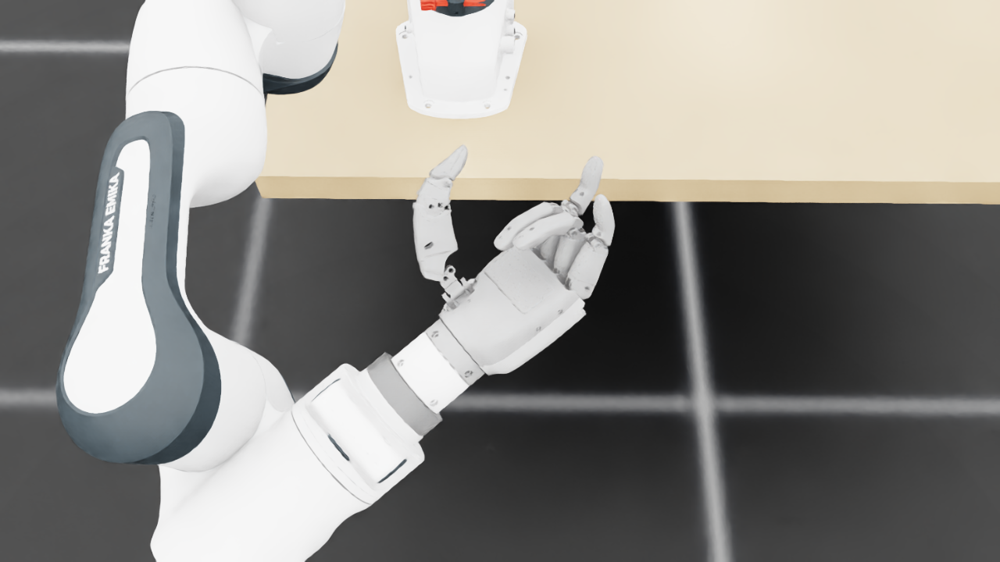
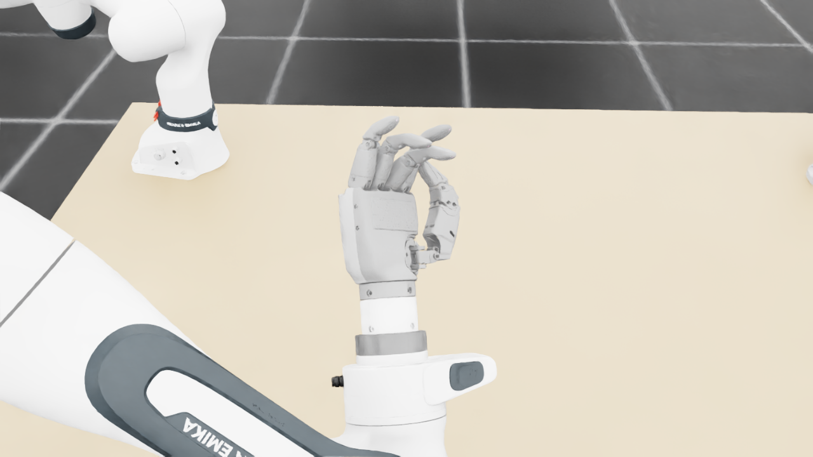
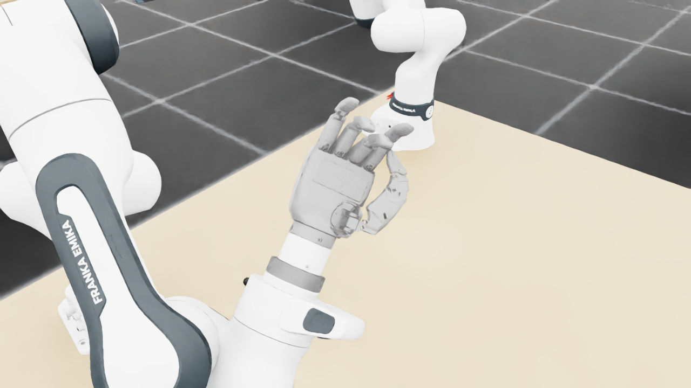
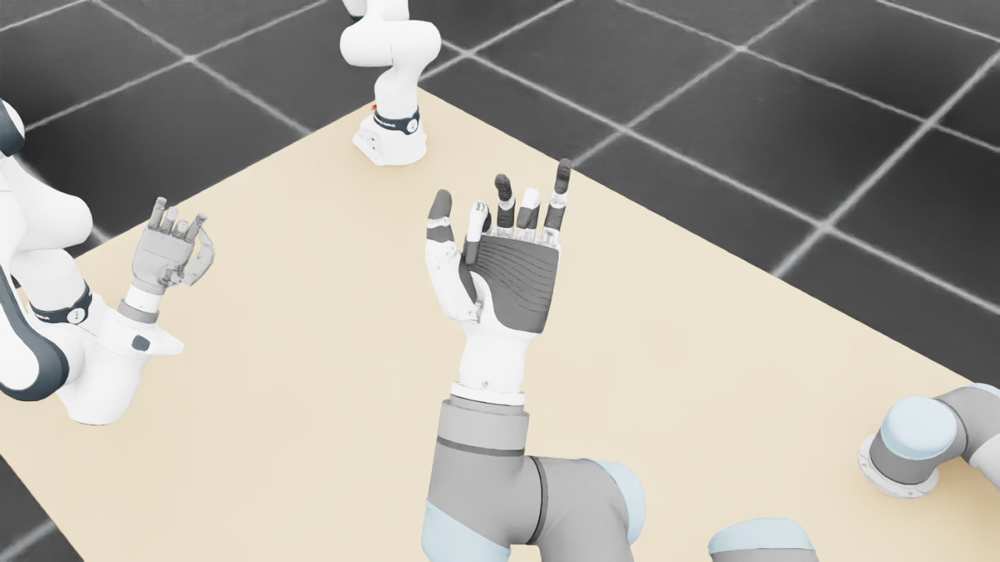
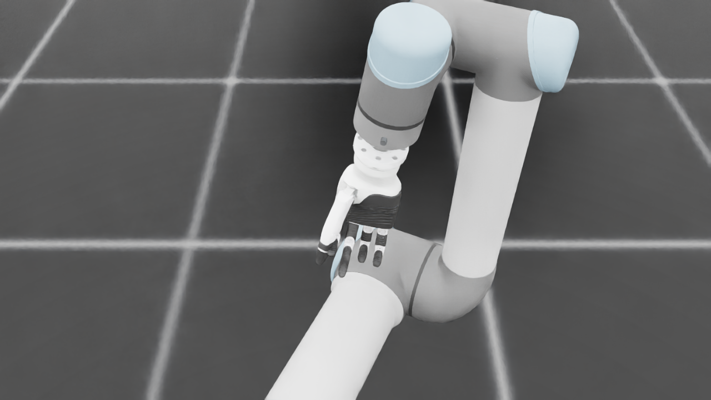
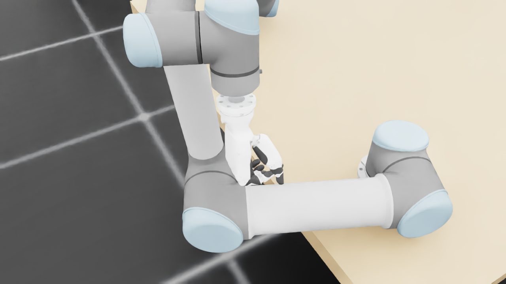
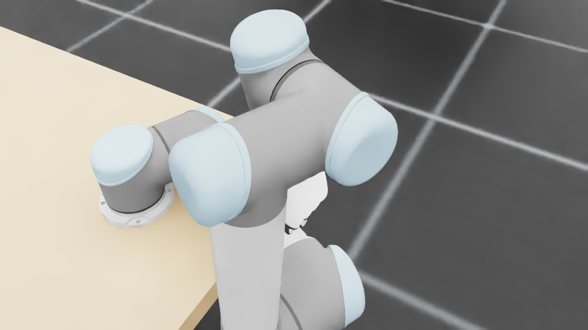
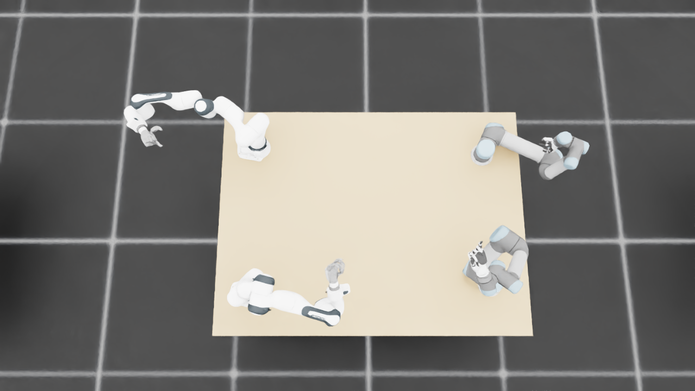
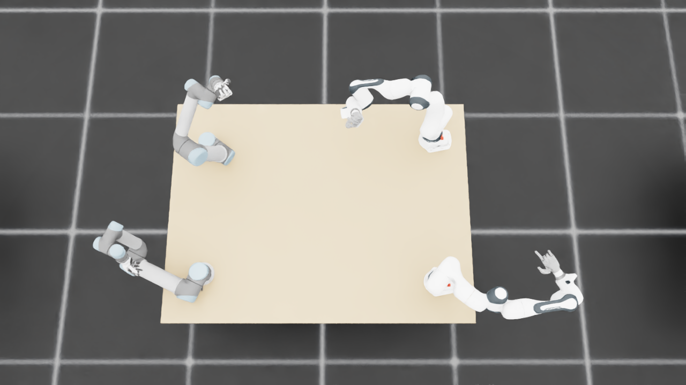

规定初始像素覆盖已通过独立数据验收，完整12步与物理安全未通过。Prescribed initial pixel coverage passes the independent DATA audit; full12-step and physical acceptance remain incomplete. Original1280×720; no edits/crop. Every image below is INITIAL, not micro1/final.
{"seed": 0, "proposal_id": 2231, "global_id": 8375, "family": 3}









{
"qualified": true,
"arms": {
"F_L": {
"qualified": true,
"palm_visual_peak_pixels": 24667,
"finger_family_peak_pixels": {
"thumb": 8681,
"index": 5080,
"middle": 2757,
"ring": 3752,
"little": 4047
},
"per_native_body_peak_pixels": {
"/World/envs/env_6/F_L/f2_hand/left_hand_base": 30346,
"/World/envs/env_6/F_L/f2_hand/left_index_1": 3025,
"/World/envs/env_6/F_L/f2_hand/left_middle_1": 859,
"/World/envs/env_6/F_L/f2_hand/left_pinky_1": 2489,
"/World/envs/env_6/F_L/f2_hand/left_ring_1": 1528,
"/World/envs/env_6/F_L/f2_hand/left_thumb_1": 696,
"/World/envs/env_6/F_L/f2_hand/left_index_2": 2055,
"/World/envs/env_6/F_L/f2_hand/left_middle_2": 2417,
"/World/envs/env_6/F_L/f2_hand/left_pinky_2": 1558,
"/World/envs/env_6/F_L/f2_hand/left_ring_2": 2224,
"/World/envs/env_6/F_L/f2_hand/left_thumb_2": 4832,
"/World/envs/env_6/F_L/f2_hand/left_thumb_3": 2008,
"/World/envs/env_6/F_L/f2_hand/left_thumb_4": 1814
},
"native_body_visibility_gaps": [],
"all_native_hand_bodies_observed": true,
"full_mesh_coverage_certified": false,
"all_recorded_attempt_peak": {
"qualified": false,
"palm_visual_peak_pixels": 24667,
"finger_family_peak_pixels": {
"thumb": 8681,
"index": 5080,
"middle": 2757,
"ring": 3752,
"little": 4971
},
"per_native_body_peak_pixels": {
"/World/envs/env_6/F_L/f2_hand/left_hand_base": 30346,
"/World/envs/env_6/F_L/f2_hand/left_index_1": 3025,
"/World/envs/env_6/F_L/f2_hand/left_middle_1": 859,
"/World/envs/env_6/F_L/f2_hand/left_pinky_1": 3206,
"/World/envs/env_6/F_L/f2_hand/left_ring_1": 1528,
"/World/envs/env_6/F_L/f2_hand/left_thumb_1": 710,
"/World/envs/env_6/F_L/f2_hand/left_index_2": 2055,
"/World/envs/env_6/F_L/f2_hand/left_middle_2": 2417,
"/World/envs/env_6/F_L/f2_hand/left_pinky_2": 1765,
"/World/envs/env_6/F_L/f2_hand/left_ring_2": 2224,
"/World/envs/env_6/F_L/f2_hand/left_thumb_2": 4832,
"/World/envs/env_6/F_L/f2_hand/left_thumb_3": 2008,
"/World/envs/env_6/F_L/f2_hand/left_thumb_4": 1814
},
"native_body_visibility_gaps": [],
"all_native_hand_bodies_observed": true,
"full_mesh_coverage_certified": false,
"qualification": false
},
"attempts": 4,
"decoded": 4
},
"F_R": {
"qualified": true,
"palm_visual_peak_pixels": 27417,
"finger_family_peak_pixels": {
"thumb": 7550,
"index": 3214,
"middle": 3017,
"ring": 3047,
"little": 3857
},
"per_native_body_peak_pixels": {
"/World/envs/env_6/F_R/f2_hand/right_hand_base": 32962,
"/World/envs/env_6/F_R/f2_hand/right_index_1": 2244,
"/World/envs/env_6/F_R/f2_hand/right_middle_1": 1492,
"/World/envs/env_6/F_R/f2_hand/right_pinky_1": 2405,
"/World/envs/env_6/F_R/f2_hand/right_ring_1": 2012,
"/World/envs/env_6/F_R/f2_hand/right_thumb_1": 728,
"/World/envs/env_6/F_R/f2_hand/right_index_2": 1187,
"/World/envs/env_6/F_R/f2_hand/right_middle_2": 1525,
"/World/envs/env_6/F_R/f2_hand/right_pinky_2": 1452,
"/World/envs/env_6/F_R/f2_hand/right_ring_2": 1533,
"/World/envs/env_6/F_R/f2_hand/right_thumb_2": 4269,
"/World/envs/env_6/F_R/f2_hand/right_thumb_3": 1695,
"/World/envs/env_6/F_R/f2_hand/right_thumb_4": 1414
},
"native_body_visibility_gaps": [],
"all_native_hand_bodies_observed": true,
"full_mesh_coverage_certified": false,
"all_recorded_attempt_peak": {
"qualified": false,
"palm_visual_peak_pixels": 27417,
"finger_family_peak_pixels": {
"thumb": 8121,
"index": 3214,
"middle": 3017,
"ring": 3047,
"little": 3857
},
"per_native_body_peak_pixels": {
"/World/envs/env_6/F_R/f2_hand/right_hand_base": 32962,
"/World/envs/env_6/F_R/f2_hand/right_index_1": 2244,
"/World/envs/env_6/F_R/f2_hand/right_middle_1": 1492,
"/World/envs/env_6/F_R/f2_hand/right_pinky_1": 2405,
"/World/envs/env_6/F_R/f2_hand/right_ring_1": 2012,
"/World/envs/env_6/F_R/f2_hand/right_thumb_1": 728,
"/World/envs/env_6/F_R/f2_hand/right_index_2": 1221,
"/World/envs/env_6/F_R/f2_hand/right_middle_2": 1525,
"/World/envs/env_6/F_R/f2_hand/right_pinky_2": 1452,
"/World/envs/env_6/F_R/f2_hand/right_ring_2": 1533,
"/World/envs/env_6/F_R/f2_hand/right_thumb_2": 4599,
"/World/envs/env_6/F_R/f2_hand/right_thumb_3": 1754,
"/World/envs/env_6/F_R/f2_hand/right_thumb_4": 1414
},
"native_body_visibility_gaps": [],
"all_native_hand_bodies_observed": true,
"full_mesh_coverage_certified": false,
"qualification": false
},
"attempts": 4,
"decoded": 4
},
"U_L": {
"qualified": true,
"palm_visual_peak_pixels": 9904,
"finger_family_peak_pixels": {
"thumb": 6637,
"index": 2321,
"middle": 1862,
"ring": 1436,
"little": 2061
},
"per_native_body_peak_pixels": {
"/World/envs/env_6/U_L/wrist_3_link": 29857,
"/World/envs/env_6/U_L/left_index_1": 1303,
"/World/envs/env_6/U_L/left_little_1": 1326,
"/World/envs/env_6/U_L/left_middle_1": 1160,
"/World/envs/env_6/U_L/left_ring_1": 1232,
"/World/envs/env_6/U_L/left_thumb_1": 130,
"/World/envs/env_6/U_L/left_index_2": 1319,
"/World/envs/env_6/U_L/left_little_2": 897,
"/World/envs/env_6/U_L/left_middle_2": 702,
"/World/envs/env_6/U_L/left_ring_2": 949,
"/World/envs/env_6/U_L/left_thumb_2": 3929,
"/World/envs/env_6/U_L/left_thumb_3": 1666,
"/World/envs/env_6/U_L/left_thumb_4": 912
},
"native_body_visibility_gaps": [],
"all_native_hand_bodies_observed": true,
"full_mesh_coverage_certified": false,
"all_recorded_attempt_peak": {
"qualified": false,
"palm_visual_peak_pixels": 9904,
"finger_family_peak_pixels": {
"thumb": 8135,
"index": 3436,
"middle": 2494,
"ring": 2529,
"little": 2989
},
"per_native_body_peak_pixels": {
"/World/envs/env_6/U_L/wrist_3_link": 29857,
"/World/envs/env_6/U_L/left_index_1": 2146,
"/World/envs/env_6/U_L/left_little_1": 1865,
"/World/envs/env_6/U_L/left_middle_1": 1160,
"/World/envs/env_6/U_L/left_ring_1": 1303,
"/World/envs/env_6/U_L/left_thumb_1": 266,
"/World/envs/env_6/U_L/left_index_2": 1397,
"/World/envs/env_6/U_L/left_little_2": 1124,
"/World/envs/env_6/U_L/left_middle_2": 1362,
"/World/envs/env_6/U_L/left_ring_2": 1343,
"/World/envs/env_6/U_L/left_thumb_2": 4806,
"/World/envs/env_6/U_L/left_thumb_3": 2067,
"/World/envs/env_6/U_L/left_thumb_4": 1008
},
"native_body_visibility_gaps": [],
"all_native_hand_bodies_observed": true,
"full_mesh_coverage_certified": false,
"qualification": false
},
"attempts": 6,
"decoded": 6
},
"U_R": {
"qualified": true,
"palm_visual_peak_pixels": 4538,
"finger_family_peak_pixels": {
"thumb": 5370,
"index": 1664,
"middle": 1706,
"ring": 1103,
"little": 1161
},
"per_native_body_peak_pixels": {
"/World/envs/env_6/U_R/wrist_3_link": 20980,
"/World/envs/env_6/U_R/right_index_1": 1061,
"/World/envs/env_6/U_R/right_little_1": 679,
"/World/envs/env_6/U_R/right_middle_1": 730,
"/World/envs/env_6/U_R/right_ring_1": 589,
"/World/envs/env_6/U_R/right_thumb_1": 408,
"/World/envs/env_6/U_R/right_index_2": 603,
"/World/envs/env_6/U_R/right_little_2": 482,
"/World/envs/env_6/U_R/right_middle_2": 976,
"/World/envs/env_6/U_R/right_ring_2": 514,
"/World/envs/env_6/U_R/right_thumb_2": 3543,
"/World/envs/env_6/U_R/right_thumb_3": 1016,
"/World/envs/env_6/U_R/right_thumb_4": 426
},
"native_body_visibility_gaps": [],
"all_native_hand_bodies_observed": true,
"full_mesh_coverage_certified": false,
"all_recorded_attempt_peak": {
"qualified": false,
"palm_visual_peak_pixels": 10246,
"finger_family_peak_pixels": {
"thumb": 6675,
"index": 2640,
"middle": 2220,
"ring": 1951,
"little": 2923
},
"per_native_body_peak_pixels": {
"/World/envs/env_6/U_R/wrist_3_link": 31514,
"/World/envs/env_6/U_R/right_index_1": 1849,
"/World/envs/env_6/U_R/right_little_1": 1830,
"/World/envs/env_6/U_R/right_middle_1": 1111,
"/World/envs/env_6/U_R/right_ring_1": 1264,
"/World/envs/env_6/U_R/right_thumb_1": 408,
"/World/envs/env_6/U_R/right_index_2": 1068,
"/World/envs/env_6/U_R/right_little_2": 1093,
"/World/envs/env_6/U_R/right_middle_2": 1109,
"/World/envs/env_6/U_R/right_ring_2": 812,
"/World/envs/env_6/U_R/right_thumb_2": 4049,
"/World/envs/env_6/U_R/right_thumb_3": 1583,
"/World/envs/env_6/U_R/right_thumb_4": 949
},
"native_body_visibility_gaps": [],
"all_native_hand_bodies_observed": true,
"full_mesh_coverage_certified": false,
"qualification": false
},
"attempts": 9,
"decoded": 9
}
},
"wide": {
"qualified": true,
"per_native_object_peak_pixels": {
"/World/envs/env_6/F_L/fr3_link0": 1364,
"/World/envs/env_6/F_L/fr3_link1": 1558,
"/World/envs/env_6/F_L/fr3_link2": 2668,
"/World/envs/env_6/F_L/fr3_link3": 2501,
"/World/envs/env_6/F_L/fr3_link4": 1557,
"/World/envs/env_6/F_L/fr3_link5": 2924,
"/World/envs/env_6/F_L/fr3_link6": 852,
"/World/envs/env_6/F_L/fr3_link7": 675,
"/World/envs/env_6/F_L/fr3_link8": 129,
"/World/envs/env_6/F_L/f2_hand/left_hand_base": 794,
"/World/envs/env_6/F_L/f2_hand/left_index_1": 56,
"/World/envs/env_6/F_L/f2_hand/left_middle_1": 35,
"/World/envs/env_6/F_L/f2_hand/left_pinky_1": 40,
"/World/envs/env_6/F_L/f2_hand/left_ring_1": 19,
"/World/envs/env_6/F_L/f2_hand/left_thumb_1": 18,
"/World/envs/env_6/F_L/f2_hand/left_index_2": 48,
"/World/envs/env_6/F_L/f2_hand/left_middle_2": 72,
"/World/envs/env_6/F_L/f2_hand/left_pinky_2": 28,
"/World/envs/env_6/F_L/f2_hand/left_ring_2": 67,
"/World/envs/env_6/F_L/f2_hand/left_thumb_2": 82,
"/World/envs/env_6/F_L/f2_hand/left_thumb_3": 55,
"/World/envs/env_6/F_L/f2_hand/left_thumb_4": 54,
"/World/envs/env_6/F_R/fr3_link0": 1604,
"/World/envs/env_6/F_R/fr3_link1": 749,
"/World/envs/env_6/F_R/fr3_link2": 1677,
"/World/envs/env_6/F_R/fr3_link3": 2384,
"/World/envs/env_6/F_R/fr3_link4": 2916,
"/World/envs/env_6/F_R/fr3_link5": 2766,
"/World/envs/env_6/F_R/fr3_link6": 810,
"/World/envs/env_6/F_R/fr3_link7": 820,
"/World/envs/env_6/F_R/fr3_link8": 139,
"/World/envs/env_6/F_R/f2_hand/right_hand_base": 717,
"/World/envs/env_6/F_R/f2_hand/right_index_1": 37,
"/World/envs/env_6/F_R/f2_hand/right_middle_1": 49,
"/World/envs/env_6/F_R/f2_hand/right_pinky_1": 57,
"/World/envs/env_6/F_R/f2_hand/right_ring_1": 33,
"/World/envs/env_6/F_R/f2_hand/right_thumb_1": 29,
"/World/envs/env_6/F_R/f2_hand/right_index_2": 54,
"/World/envs/env_6/F_R/f2_hand/right_middle_2": 67,
"/World/envs/env_6/F_R/f2_hand/right_pinky_2": 45,
"/World/envs/env_6/F_R/f2_hand/right_ring_2": 64,
"/World/envs/env_6/F_R/f2_hand/right_thumb_2": 98,
"/World/envs/env_6/F_R/f2_hand/right_thumb_3": 39,
"/World/envs/env_6/F_R/f2_hand/right_thumb_4": 39,
"/World/envs/env_6/U_L/base_link": 90,
"/World/envs/env_6/U_L/shoulder_link": 753,
"/World/envs/env_6/U_L/upper_arm_link": 3534,
"/World/envs/env_6/U_L/forearm_link": 3321,
"/World/envs/env_6/U_L/wrist_1_link": 1000,
"/World/envs/env_6/U_L/wrist_2_link": 838,
"/World/envs/env_6/U_L/wrist_3_link": 1203,
"/World/envs/env_6/U_L/left_index_1": 73,
"/World/envs/env_6/U_L/left_little_1": 47,
"/World/envs/env_6/U_L/left_middle_1": 43,
"/World/envs/env_6/U_L/left_ring_1": 34,
"/World/envs/env_6/U_L/left_thumb_1": 2,
"/World/envs/env_6/U_L/left_index_2": 77,
"/World/envs/env_6/U_L/left_little_2": 36,
"/World/envs/env_6/U_L/left_middle_2": 69,
"/World/envs/env_6/U_L/left_ring_2": 86,
"/World/envs/env_6/U_L/left_thumb_2": 85,
"/World/envs/env_6/U_L/left_thumb_3": 58,
"/World/envs/env_6/U_L/left_thumb_4": 52,
"/World/envs/env_6/U_R/base_link": 369,
"/World/envs/env_6/U_R/shoulder_link": 1411,
"/World/envs/env_6/U_R/upper_arm_link": 4588,
"/World/envs/env_6/U_R/forearm_link": 2390,
"/World/envs/env_6/U_R/wrist_1_link": 855,
"/World/envs/env_6/U_R/wrist_2_link": 879,
"/World/envs/env_6/U_R/wrist_3_link": 396,
"/World/envs/env_6/U_R/right_index_1": 22,
"/World/envs/env_6/U_R/right_little_1": 24,
"/World/envs/env_6/U_R/right_middle_1": 27,
"/World/envs/env_6/U_R/right_ring_1": 17,
"/World/envs/env_6/U_R/right_thumb_1": 12,
"/World/envs/env_6/U_R/right_index_2": 32,
"/World/envs/env_6/U_R/right_little_2": 36,
"/World/envs/env_6/U_R/right_middle_2": 51,
"/World/envs/env_6/U_R/right_ring_2": 42,
"/World/envs/env_6/U_R/right_thumb_2": 107,
"/World/envs/env_6/U_R/right_thumb_3": 13,
"/World/envs/env_6/U_R/right_thumb_4": 15,
"/World/envs/env_6/TableF": 103554,
"/World/envs/env_6/TableU": 104321
},
"arm_peak_pixels": {
"F_L": 14733,
"F_R": 13015,
"U_L": 10004,
"U_R": 11189
},
"table_peak_pixels": {
"TableF": 103554,
"TableU": 104321
},
"critical_body_peak_pixels": {
"/World/envs/env_6/U_L/forearm_link": 3321,
"/World/envs/env_6/U_L/wrist_2_link": 838,
"/World/envs/env_6/U_R/forearm_link": 2390,
"/World/envs/env_6/U_R/wrist_2_link": 879
}
},
"raw_attempt_count": 62,
"PNG_count": 62,
"angle_records": 62,
"max_actual_angle_identity_error_deg": 0.0,
"held_snapshot_checks": 2134,
"universal_visibility_impossible": false,
"full_mesh_coverage_certified": false
}